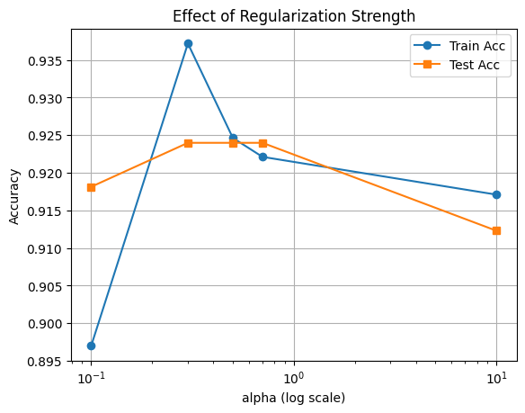
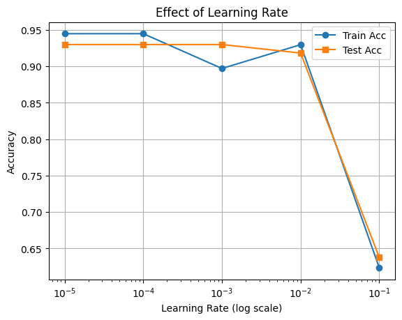
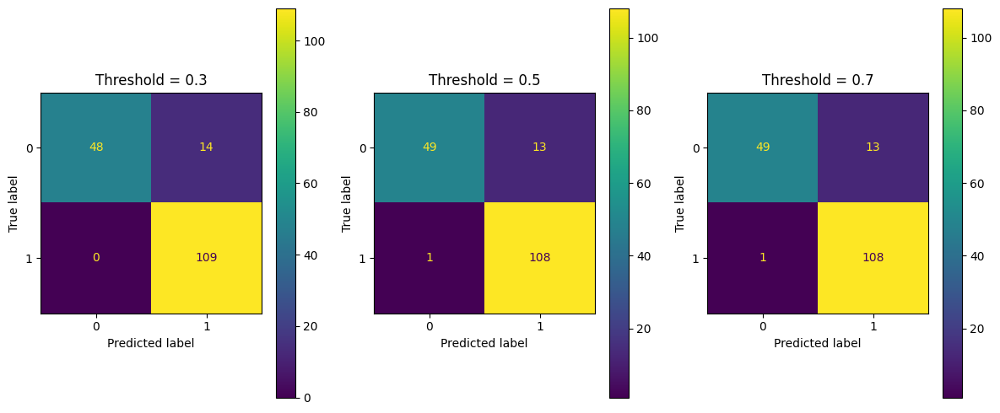

# from sklearn.datasets import load_breast_cancer
# from sklearn.model_selection import train_test_split
# from sklearn.preprocessing import StandardScaler
# import pandas as pd
# # Load dataset
# data = load_breast_cancer()
# X = data.data
# y = data.target
# # Split dataset
# X_train, X_test, y_train, y_test = train_test_split(
# X, y, test_size=0.3, random_state=31
# )
# # Normalize (Standardize) features
# scaler = StandardScaler()
# X_train = scaler.fit_transform(X_train)
# X_test = scaler.transform(X_test)Optimising a Neural Network Classifier
In this notebook, we demonstrate how to tune hyperparameters in a neural network model to improve performance.
We will focus on: - hidden_layer_sizes - alpha (regularization) - learning_rate_init
We’ll also visualize how these parameters affect accuracy, and look for signs of overfitting or underfitting.
Step 1: Load Breast Cancer Data
Load with Normalisation
Load without Normalisation To see the effects of different network sizes and other hyperparameters we use the non-normlaised dataset. For teh easier task of calssifying using normalised data most values for hyperparameters result in a very good accuracy.
from sklearn.datasets import load_breast_cancer
from sklearn.model_selection import train_test_split
from sklearn.preprocessing import StandardScaler
import pandas as pd
# Load dataset
data = load_breast_cancer()
X = data.data
y = data.target
# Split dataset
X_train, X_test, y_train, y_test = train_test_split(
X, y, test_size=0.3, random_state=31
)Step 2: Define a Function to Train and Evaluate
This function will: - Train the MLP model - Return training and test accuracy
from sklearn.neural_network import MLPClassifier
from sklearn.metrics import accuracy_score
import numpy as np
def train_and_evaluate(hidden_layer_sizes=(200, 400, 400, 200), alpha=0.0001, lr=0.001):
model = MLPClassifier(hidden_layer_sizes=hidden_layer_sizes,
alpha=alpha,
learning_rate_init=lr,
max_iter=2000,
random_state=42)
model.fit(X_train, y_train)
train_acc = accuracy_score(y_train, model.predict(X_train))
test_acc = accuracy_score(y_test, model.predict(X_test))
return train_acc, test_accStep 4: Explore Effect of alpha (L2 Regularization)
alpha prevents overfitting by penalising large weights.
- Low
alpha: can overfit - High
alpha: can underfit
\[ \text{Loss} = \text{Original Loss} + \frac{\alpha}{2} \sum_{i} w_i^2 \]
alphas = [1e-1, 3e-1, 5e-1, 7e-1, 1e1]
train_scores, test_scores = [], []
for a in alphas:
tr, te = train_and_evaluate(alpha=a)
train_scores.append(tr)
test_scores.append(te)
plt.semilogx(alphas, train_scores, marker='o', label='Train Acc')
plt.semilogx(alphas, test_scores, marker='s', label='Test Acc')
plt.xlabel('alpha (log scale)')
plt.ylabel('Accuracy')
plt.title('Effect of Regularization Strength')
plt.legend()
plt.grid(True)
plt.show()
Step 5: Explore Effect of learning_rate_init
This controls how fast the model updates its weights.
- Too small: slow convergence
- Too large: may never converge
lrs = [1e-5, 1e-4, 1e-3, 1e-2, 1e-1]
train_scores, test_scores = [], []
for lr in lrs:
tr, te = train_and_evaluate(lr=lr)
train_scores.append(tr)
test_scores.append(te)
plt.plot(lrs, train_scores, marker='o', label='Train Acc')
plt.plot(lrs, test_scores, marker='s', label='Test Acc')
plt.xscale('log')
plt.xlabel('Learning Rate (log scale)')
plt.ylabel('Accuracy')
plt.title('Effect of Learning Rate')
plt.legend()
plt.grid(True)
plt.show()
Conclusion
- Neural networks are sensitive to hyperparameters
- Use visualisation to find sweet spot
- Avoid overfitting by tuning
alphaandhidden_layer_sizes - Don’t pick hyperparameters blindly – use grid search or cross-validation
Changing the Classification Threshold
Most classifiers like neural networks output probabilities between 0 and 1. By default, the threshold for classification is 0.5. This means:
- If predicted probability ≥ 0.5 → classify as positive
- Else → classify as negative
Changing the Threshold:
- Lower threshold → more positives predicted → higher recall, more false positives
- Higher threshold → fewer positives predicted → higher precision, more false negatives
Choosing the right threshold depends on your application’s goals.
We’ll now visualize how the confusion matrix changes for two different thresholds.
from sklearn.metrics import ConfusionMatrixDisplay
thresholds = [0.3, 0.5, 0.7] # List of two thresholds to compare
# Retrain model
manual_model = MLPClassifier()
manual_model.fit(X_train, y_train)
# Predict probabilities
y_proba = manual_model.predict_proba(X_test)[:, 1]
# Plot side-by-side confusion matrices
fig, axs = plt.subplots(1, 3, figsize=(12, 5))
for i, thresh in enumerate(thresholds):
y_pred = (y_proba >= thresh).astype(int)
ConfusionMatrixDisplay.from_predictions(y_test, y_pred, ax=axs[i])
axs[i].set_title(f"Threshold = {thresh}")
plt.tight_layout()
plt.show()C:\Users\moji1\AppData\Local\Packages\PythonSoftwareFoundation.Python.3.13_qbz5n2kfra8p0\LocalCache\local-packages\Python313\site-packages\sklearn\neural_network\_multilayer_perceptron.py:780: ConvergenceWarning: Stochastic Optimizer: Maximum iterations (200) reached and the optimization hasn't converged yet.
warnings.warn(